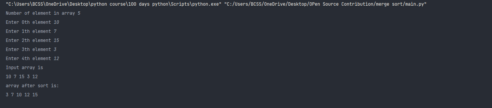

Script Name
Merge Sort Algorithm.
Aim
To write a program for Merge sort.
Purpose
To get a understanding about Merge sort.
Short description of package/script
- It is a python program of Merge sort Algorithm.
- It is written in a way that it takes user input.
Workflow of the Project
-
First a function is written to perform diving array in two halves.
- Then another funtion perform merging of array.
Detailed explanation of script, if needed
Merge Sort is a Divide and Conquer algorithm. It divides the input array
into two halves, calls itself for the two halves, and then merges the two
sorted halves.
Algorithm
-
Find the middle point to divide the array into two halves:
middle m = l+ (r-l)/2
-
Call mergeSort for first half:
Call merge_sort(arr, l, m)
- Call mergeSort for second half: Call merge_sort(arr, m+1, r)
-
Merge the two halves sorted in step 2 and 3: Call merge_array(arr, l, m,
r)
- call the array again using recursion.
Output

Author(s)
Rajpurohit Vijesh